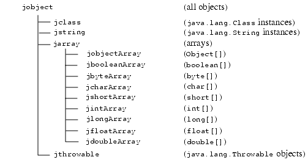

| Contents | Prev | Next | Index | The Java Native Interface Programmer's Guide and Specification |
This chapter specifies the standard data types defined by the JNI. C and C++ code should include the header file jni.h before referring to these types.
The JNI defines a set of C/C++ types that correspond to the primitive and reference types in the Java programming language.
The following table describes the primitive types in the Java programming language and the corresponding types in the JNI. Like their counterparts in the Java programming language, all primitive types in the JNI have well-defined sizes.
The jsize integer type is used to describe cardinal indices and sizes:
typedef jint jsize;
The JNI includes a number of reference types that correspond to different kinds of reference types in the Java programming language. JNI reference types are organized in the hierarchy shown below.

When used in the C programming language, all other JNI reference types are defined to be the same as jobject. For example:
typedef jobject jclass;
When used in the C++ programming language, the JNI introduces a set of dummy classes to express the subtyping relationship among various reference types:
class _jobject {};
class _jclass : public _jobject {};
class _jthrowable : public _jobject {};
class _jstring : public _jobject {};
class _jarray : public _jobject {};
class _jbooleanArray : public _jarray {};
class _jbyteArray : public _jarray {};
class _jcharArray : public _jarray {};
class _jshortArray : public _jarray {};
class _jintArray : public _jarray {};
class _jlongArray : public _jarray {};
class _jfloatArray : public _jarray {};
class _jdoubleArray : public _jarray {};
class _jobjectArray : public _jarray {};
typedef _jobject *jobject;
typedef _jclass *jclass;
typedef _jthrowable *jthrowable;
typedef _jstring *jstring;
typedef _jarray *jarray;
typedef _jbooleanArray *jbooleanArray;
typedef _jbyteArray *jbyteArray;
typedef _jcharArray *jcharArray;
typedef _jshortArray *jshortArray;
typedef _jintArray *jintArray;
typedef _jlongArray *jlongArray;
typedef _jfloatArray *jfloatArray;
typedef _jdoubleArray *jdoubleArray;
typedef _jobjectArray *jobjectArray;
The jvalue type is a union of the reference types and primitive types. It is defined as follows:
typedef union jvalue {
jboolean z;
jbyte b;
jchar c;
jshort s;
jint i;
jlong j;
jfloat f;
jdouble d;
jobject l;
} jvalue;
Method and field IDs are regular C pointer types:
struct _jfieldID; /* opaque structure */ typedef struct _jfieldID *jfieldID; /* field ID */ struct _jmethodID; /* opaque structure */ typedef struct _jmethodID *jmethodID; /* method ID */
The JNI uses C strings to represent class names, field and method names, and field and method descriptors. These strings are in the UTF-8 format.
UTF-8 strings are encoded so that character sequences that contain only non-null ASCII characters can be represented using only one byte per character, but characters of up to 16 bits can be represented. All characters in the range '\u0001' to '\u007F' are represented by a single byte, as follows:
The seven bits of data in the byte give the value of the character that is represented. The null character ('\u000') and characters in the range '\u0080' to '\u07FF' are represented by a pair of bytes, x and y, as follows:
The bytes represent the character with the value ((x & 0x1f) << 6) + (y & 0x3f).
Characters in the range '\u0800' to '\uFFFF' are represented by three bytes, x, y, and z:
The character with the value ((x & 0xf) << 12) + (y & 0x3f) << 6) + (z & 0x3f) is represented by the three bytes.
There are two differences between this format and the standard UTF-8 format. First, the null byte (byte)0 is encoded using the two-byte format rather than the one-byte format. This means that JNI UTF-8 strings never have embedded nulls. Second, only the one-byte, two-byte, and three-byte formats are used. The JNI does not recognize the longer UTF-8 formats.
A class descriptor represents the name of a class or an interface. It can be derived from a fully qualified class or interface name as defined in The JavaTM Language Specification by substituting the "." character with the "/" character. For example, the class descriptor for java.lang.String is:
"java/lang/String"
Array classes are formed using the "[" character followed by the field descriptor (§12.3.3) of the element type. The class descriptor for "int[]" is:
"[I"
and the class descriptor for "double[][][]" is:
"[[[D"
The field descriptors for eight primitive types are as follows:
Z
boolean
B
byte
C
char
S
short
I
int
J
long
F
float
D
double
Field descriptors of reference types begin with the "
L" character, followed by the class descriptor, and terminated by the ";" character. Field descriptors of array types are formed following the same rule as class descriptors of array classes. The following are some examples of field descriptors for reference types and their Java programming language counterparts.
"Ljava/lang/String;"
String
"[I"
int[]
"[Ljava/lang/Object;"
Object[]
Method descriptors are formed by placing the field descriptors of all argument types in a pair of parentheses, and following that by the field descriptor of the return type. There are no spaces or other separator characters between the argument types. "V" is used to denote the void method return type. Constructors use "V" as their return type, and use "<init>" as their name.
Here are some examples of JNI method descriptors and their corresponding method and constructor types.
"()Ljava/lang/String;"
String f();
"(ILjava/lang/Class;)J"
long f(int i, Class c);
"([B)V"
String(byte[] bytes);
JNIEXPORT and JNICALL are macros used to specify the calling and linkage convention of both JNI functions and native method implementations. The programmer must place the JNIEXPORT macro before the function return type and the JNICALL macro between the function name and the return type. For example:
JNIEXPORT jint JNICALL Java_pkg_Cls_f(JNIEnv *env, jobject this);
is the prototype for a C function that implements pkg.Cls.f, whereas:
jint (JNICALL *f_ptr)(JNIEnv *env, jobject this);
is the function pointer variable that can be assigned the Java_pkg_Cls_f function.
JNI_FALSE and JNI_TRUE are constants defined for the jboolean type:
#define JNI_FALSE 0 #define JNI_TRUE 1
JNI_OK represents the successful return value of JNI functions, and JNI_ERR is sometimes used to represent error conditions.
#define JNI_OK 0 #define JNI_ERR (-1)
Not all error conditions are represented by JNI_ERR because the JNI specification does not currently include a standard set of error codes. JNI functions return JNI_OK on success, and a negative number on failure.
The following two constants are used in functions that release the native copy of primitive arrays. An example of such functions is ReleaseIntArrayElements. JNI_COMMIT forces the native array to be copied back to the original array in the Java virtual machine. JNI_ABORT frees the memory allocated for the native array without copying back the new contents.
#define JNI_COMMIT 1 #define JNI_ABORT 2
Java 2 SDK release 1.2 introduces two constants representing the JNI version numbers.
#define JNI_VERSION_1_1 0x00010001 /* JNI version 1.1 */ #define JNI_VERSION_1_2 0x00010002 /* JNI version 1.2 */
A native application may determine whether it is being compiled against the 1.1 or 1.2 version of the jni.h file by performing the following conditional compilation:
#ifdefJNI_VERSION_1_2/* compiling against Java 2 SDK 1.2's jni.h */ #else /* compiling against JDK 1.1's jni.h */ #endif
The following constants represent the special error codes returned by the GetEnv function, which is part of the JavaVM Interface:
#define JNI_EDETACHED (-2) /* thread detached from the VM */ #define JNI_EVERSION (-3) /* JNI version error */
| Contents | Prev | Next | Index | The Java Native Interface Programmer's Guide and Specification |
Copyright © 2002 Sun Microsystems, Inc.
All rights reserved
Please send any comments or corrections to jni@java.sun.com